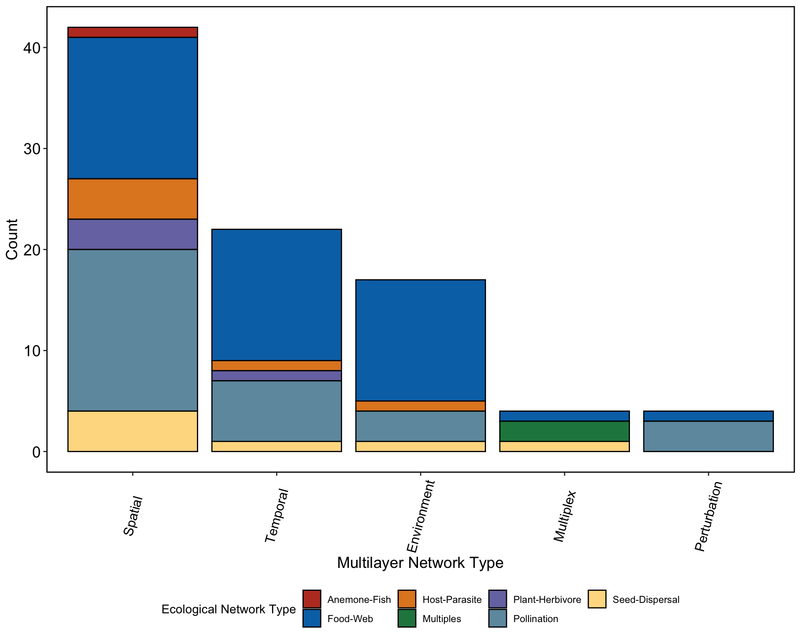

Working with included data sets
# source('R/create_multilayer_network.R')
# source('R/create_monolayer_object.R')
# source('R/get_sam.R')
# source('R/get_igraph.R')
# source('R/list_to_matrix.R')
# source('R/matrix_to_list_bipartite.R')
# source('R/matrix_to_list_unipartite.R')
# source('R/view_emln.R')
# source('R/load_emln.R')
# source('R/search_emln.R')
library(emln)
library(igraph)
library(bipartite)
library(Matrix)
library(magrittr)
library(ggplot2)
library(readr)
library(tibble)
library(dplyr)
library(readr)
library(stringr)
library(ggsci)
library(ggbreak)
library(ggpubr)About the data sets
The package includes 80 data sets of multilayer networks, collected from different sources. This collection of data is highly useful for comparative analysis and for practicing workflows. How data were collected and organized is described in the paper.
The data includes 5 types of multilayer networks:
## multi_type count
## 1 Spatial 44
## 2 Temporal 22
## 3 Environment 15
## 4 Multiplex 6
## 5 Perturbation 4These are divided into 7 types of ecological interaction networks:.
## eco_type count
## 1 Food-Web 36
## 2 Pollination 25
## 3 Seed-Dispersal 7
## 4 Host-Parasite 6
## 5 Plant-Herbivore 3
## 6 Multiples 2
## 7 Anemone-Fish 1Here is a visual summary:

The data is distributed globally:

Browsing the data
You can browse through the data sets using view_emln()
in RStudio. The function will open a user interface in the viewer panel.
To search for a network with a certain set of parameters, you can use
search_emln(). Here are a few examples.
search_1 <- search_emln(ecological_network_type = 'Host-parasite')
names(search_1)## [1] "network_id" "network_name" "ecological_network_type" "multilayer_network_type"
## [5] "state_nodes" "weighted" "directed" "interlayer"
## [9] "layer_num" "node_num"# Show some of the columns
search_1 %>% select("network_id","network_name","ecological_network_type","multilayer_network_type","layer_num")## # A tibble: 7 × 5
## # Groups: network_id, network_name [6]
## network_id network_name ecological_network_type multilayer_network_type layer_num
## <dbl> <chr> <chr> <chr> <dbl>
## 1 7 emln7_environment_rejmanek_stary_1979 Host-Parasite Environment 4
## 2 24 emln24_spatial_canadian_fish_parasite Host-Parasite Spatial 12
## 3 34 emln34_spatial_hadfield_2013 Host-Parasite Spatial 51
## 4 39 emln39_spatial_krasnov_ectoparasites Host-Parasite Spatial 54
## 5 55 emln55_spatial_slovakia Host-Parasite Spatial 120
## 6 59 emln59_spatial_temporal_kolpelke_2017 Host-Parasite Spatial 1532
## 7 59 emln59_spatial_temporal_kolpelke_2017 Host-Parasite Temporal 1532search_2 <- search_emln(ecological_network_type = 'Pollination', layer_number_minimum = 15)
search_2 %>% select("network_id","network_name","ecological_network_type","multilayer_network_type","layer_num")## # A tibble: 6 × 5
## # Groups: network_id, network_name [5]
## network_id network_name ecological_network_t…¹ multilayer_network_t…² layer_num
## <dbl> <chr> <chr> <chr> <dbl>
## 1 2 emln2_environment_benadi_jae_2013 Pollination Environment 69
## 2 66 emln66_temporal_caradona_2020 Pollination Temporal 86
## 3 73 emln73_temporal_perturbation_kaiser_bunb… Pollination Temporal 24
## 4 73 emln73_temporal_perturbation_kaiser_bunb… Pollination Perturbation 24
## 5 74 emln74_temporal_ponisio_2017 Pollination Temporal 141
## 6 80 emln80_temporal_zackenberg_2013 Pollination Temporal 163
## # ℹ abbreviated names: ¹ecological_network_type, ²multilayer_network_typeLoading a network
We load the spatial multilayer network (network_id = 38) that comes with the package. This is a spatial seed-Dispersal network (collected from Web of Life). The network has five layers and 22 physical nodes, with a total of 84 interactions that are all intralayer, undirected, and weighted. There are no interlayer interactions recorded for this network.
d38 <- load_emln(38)## [1] "Creating state node map"
## [1] "Creating extended link list with node IDs"d38## $nodes
## # A tibble: 22 × 5
## node_id node_name type taxa_verified verification_level
## <int> <chr> <chr> <chr> <chr>
## 1 1 Juniperus_communis plant TRUE species
## 2 2 Juniperus_sabina plant TRUE species
## 3 3 Berberis_vulgaris plant TRUE species
## 4 4 Crataegus_monogyna plant TRUE species
## 5 5 Rosa_canina plant TRUE species
## 6 6 Juniperus_phoenicea plant TRUE species
## 7 7 Hedera_helix plant TRUE species
## 8 8 Lonicera_arborea plant TRUE species
## 9 9 Taxus_baccata plant TRUE species
## 10 10 Prunus_prostrata plant TRUE species
## # ℹ 12 more rows
##
## $layers
## # A tibble: 5 × 8
## layer_id location latitude longitude num_of_species num_of_interactions connectance layer_name
## <int> <chr> <dbl> <dbl> <int> <int> <dbl> <chr>
## 1 1 Campos de Otero, Sier… 37.1 -3.39 6 6 0.667 layer_1
## 2 2 Cañada de las Sabinas… 37.9 -2.87 16 31 0.646 layer_2
## 3 3 Cañada Travina, Sierr… 38.1 -2.75 13 26 0.65 layer_3
## 4 4 Sabinar del Marqués, … 37.0 -6.55 9 10 0.5 layer_4
## 5 5 Santa Bárbara, Sierra… 37.4 -2.84 9 11 0.55 layer_5
##
## $extended
## layer_from node_from layer_to node_to weight type
## 1 layer_1 Juniperus_communis layer_1 Turdus.torquatus 1 seed-dispersal
## 2 layer_1 Juniperus_communis layer_1 Turdus.viscivorus 1 seed-dispersal
## 3 layer_1 Juniperus_communis layer_1 Turdus.iliacus 1 seed-dispersal
## 4 layer_1 Juniperus_sabina layer_1 Turdus.torquatus 1 seed-dispersal
## 5 layer_1 Juniperus_sabina layer_1 Turdus.viscivorus 1 seed-dispersal
## 6 layer_1 Berberis_vulgaris layer_1 Turdus.torquatus 1 seed-dispersal
## 7 layer_2 Crataegus_monogyna layer_2 Turdus.merula 1 seed-dispersal
## 8 layer_2 Crataegus_monogyna layer_2 Turdus.viscivorus 1 seed-dispersal
## 9 layer_2 Crataegus_monogyna layer_2 Turdus.iliacus 1 seed-dispersal
## 10 layer_2 Crataegus_monogyna layer_2 Turdus.torquatus 1 seed-dispersal
## 11 layer_2 Juniperus_communis layer_2 Turdus.merula 1 seed-dispersal
## 12 layer_2 Juniperus_communis layer_2 Turdus.viscivorus 1 seed-dispersal
## 13 layer_2 Juniperus_communis layer_2 Turdus.iliacus 1 seed-dispersal
## 14 layer_2 Juniperus_communis layer_2 Turdus.torquatus 1 seed-dispersal
## 15 layer_2 Juniperus_sabina layer_2 Turdus.merula 1 seed-dispersal
## 16 layer_2 Juniperus_sabina layer_2 Turdus.viscivorus 1 seed-dispersal
## 17 layer_2 Juniperus_sabina layer_2 Turdus.iliacus 1 seed-dispersal
## 18 layer_2 Juniperus_sabina layer_2 Turdus.torquatus 1 seed-dispersal
## 19 layer_2 Rosa_canina layer_2 Turdus.merula 1 seed-dispersal
## 20 layer_2 Rosa_canina layer_2 Turdus.viscivorus 1 seed-dispersal
## 21 layer_2 Rosa_canina layer_2 Turdus.iliacus 1 seed-dispersal
## 22 layer_2 Rosa_canina layer_2 Turdus.torquatus 1 seed-dispersal
## 23 layer_2 Berberis_vulgaris layer_2 Turdus.merula 1 seed-dispersal
## 24 layer_2 Berberis_vulgaris layer_2 Turdus.viscivorus 1 seed-dispersal
## 25 layer_2 Berberis_vulgaris layer_2 Turdus.iliacus 1 seed-dispersal
## 26 layer_2 Juniperus_phoenicea layer_2 Turdus.merula 1 seed-dispersal
## 27 layer_2 Juniperus_phoenicea layer_2 Turdus.viscivorus 1 seed-dispersal
## 28 layer_2 Juniperus_phoenicea layer_2 Turdus.torquatus 1 seed-dispersal
## 29 layer_2 Hedera_helix layer_2 Turdus.merula 1 seed-dispersal
## 30 layer_2 Hedera_helix layer_2 Turdus.viscivorus 1 seed-dispersal
## 31 layer_2 Lonicera_arborea layer_2 Turdus.merula 1 seed-dispersal
## 32 layer_2 Lonicera_arborea layer_2 Turdus.torquatus 1 seed-dispersal
## 33 layer_2 Taxus_baccata layer_2 Turdus.merula 1 seed-dispersal
## 34 layer_2 Taxus_baccata layer_2 Turdus.viscivorus 1 seed-dispersal
## 35 layer_2 Prunus_prostrata layer_2 Turdus.merula 1 seed-dispersal
## 36 layer_2 Rhamnus_myrtifolius layer_2 Turdus.merula 1 seed-dispersal
## 37 layer_2 Rhamnus_saxatilis layer_2 Turdus.iliacus 1 seed-dispersal
## 38 layer_3 Berberis_vulgaris layer_3 Turdus.torquatus 1 seed-dispersal
## 39 layer_3 Berberis_vulgaris layer_3 Turdus.merula 1 seed-dispersal
## 40 layer_3 Berberis_vulgaris layer_3 Turdus.viscivorus 1 seed-dispersal
## 41 layer_3 Berberis_vulgaris layer_3 Turdus.iliacus 1 seed-dispersal
## 42 layer_3 Berberis_vulgaris layer_3 Turdus.philomelos 1 seed-dispersal
## 43 layer_3 Crataegus_monogyna layer_3 Turdus.torquatus 1 seed-dispersal
## 44 layer_3 Crataegus_monogyna layer_3 Turdus.merula 1 seed-dispersal
## 45 layer_3 Crataegus_monogyna layer_3 Turdus.viscivorus 1 seed-dispersal
## 46 layer_3 Crataegus_monogyna layer_3 Turdus.iliacus 1 seed-dispersal
## 47 layer_3 Crataegus_monogyna layer_3 Turdus.philomelos 1 seed-dispersal
## 48 layer_3 Hedera_helix layer_3 Turdus.torquatus 1 seed-dispersal
## 49 layer_3 Hedera_helix layer_3 Turdus.merula 1 seed-dispersal
## 50 layer_3 Hedera_helix layer_3 Turdus.viscivorus 1 seed-dispersal
## 51 layer_3 Hedera_helix layer_3 Turdus.iliacus 1 seed-dispersal
## 52 layer_3 Taxus_baccata layer_3 Turdus.torquatus 1 seed-dispersal
## 53 layer_3 Taxus_baccata layer_3 Turdus.merula 1 seed-dispersal
## 54 layer_3 Taxus_baccata layer_3 Turdus.viscivorus 1 seed-dispersal
## 55 layer_3 Taxus_baccata layer_3 Turdus.iliacus 1 seed-dispersal
## 56 layer_3 Rosa_canina layer_3 Turdus.torquatus 1 seed-dispersal
## 57 layer_3 Rosa_canina layer_3 Turdus.merula 1 seed-dispersal
## 58 layer_3 Rosa_canina layer_3 Turdus.viscivorus 1 seed-dispersal
## 59 layer_3 Lonicera_arborea layer_3 Turdus.torquatus 1 seed-dispersal
## 60 layer_3 Lonicera_arborea layer_3 Turdus.merula 1 seed-dispersal
## 61 layer_3 Viscum_album layer_3 Turdus.torquatus 1 seed-dispersal
## 62 layer_3 Viscum_album layer_3 Turdus.viscivorus 1 seed-dispersal
## 63 layer_3 Juniperus_communis layer_3 Turdus.torquatus 1 seed-dispersal
## 64 layer_4 Juniperus_phoenicea layer_4 Turdus.merula 1 seed-dispersal
## 65 layer_4 Juniperus_phoenicea layer_4 Turdus.iliacus 1 seed-dispersal
## 66 layer_4 Juniperus_phoenicea layer_4 Turdus.philomelos 1 seed-dispersal
## 67 layer_4 Juniperus_phoenicea layer_4 Turdus.torquatus 1 seed-dispersal
## 68 layer_4 Juniperus_phoenicea layer_4 Turdus.viscivorus 1 seed-dispersal
## 69 layer_4 Osyris_quadripartita layer_4 Turdus.merula 1 seed-dispersal
## 70 layer_4 Osyris_quadripartita layer_4 Turdus.iliacus 1 seed-dispersal
## 71 layer_4 Osyris_quadripartita layer_4 Turdus.philomelos 1 seed-dispersal
## 72 layer_4 Corema_album layer_4 Turdus.merula 1 seed-dispersal
## 73 layer_4 Phillyrea_angustifolia layer_4 Turdus.merula 1 seed-dispersal
## 74 layer_5 Berberis_vulgaris layer_5 Turdus.torquatus 1 seed-dispersal
## 75 layer_5 Berberis_vulgaris layer_5 Turdus.viscivorus 1 seed-dispersal
## 76 layer_5 Berberis_vulgaris layer_5 Turdus.iliacus 1 seed-dispersal
## 77 layer_5 Berberis_vulgaris layer_5 Turdus.merula 1 seed-dispersal
## 78 layer_5 Juniperus_sabina layer_5 Turdus.torquatus 1 seed-dispersal
## 79 layer_5 Juniperus_sabina layer_5 Turdus.viscivorus 1 seed-dispersal
## 80 layer_5 Juniperus_sabina layer_5 Turdus.iliacus 1 seed-dispersal
## 81 layer_5 Juniperus_sabina layer_5 Turdus.merula 1 seed-dispersal
## 82 layer_5 Daphne_oleoides layer_5 Turdus.viscivorus 1 seed-dispersal
## 83 layer_5 Juniperus_communis layer_5 Turdus.torquatus 1 seed-dispersal
## 84 layer_5 Rosa_canina layer_5 Turdus.torquatus 1 seed-dispersal
##
## $extended_ids
## layer_from node_from layer_to node_to weight type
## 1 1 1 1 18 1 seed-dispersal
## 2 1 1 1 19 1 seed-dispersal
## 3 1 1 1 20 1 seed-dispersal
## 4 1 2 1 18 1 seed-dispersal
## 5 1 2 1 19 1 seed-dispersal
## 6 1 3 1 18 1 seed-dispersal
## 7 2 4 2 21 1 seed-dispersal
## 8 2 4 2 19 1 seed-dispersal
## 9 2 4 2 20 1 seed-dispersal
## 10 2 4 2 18 1 seed-dispersal
## 11 2 1 2 21 1 seed-dispersal
## 12 2 1 2 19 1 seed-dispersal
## 13 2 1 2 20 1 seed-dispersal
## 14 2 1 2 18 1 seed-dispersal
## 15 2 2 2 21 1 seed-dispersal
## 16 2 2 2 19 1 seed-dispersal
## 17 2 2 2 20 1 seed-dispersal
## 18 2 2 2 18 1 seed-dispersal
## 19 2 5 2 21 1 seed-dispersal
## 20 2 5 2 19 1 seed-dispersal
## 21 2 5 2 20 1 seed-dispersal
## 22 2 5 2 18 1 seed-dispersal
## 23 2 3 2 21 1 seed-dispersal
## 24 2 3 2 19 1 seed-dispersal
## 25 2 3 2 20 1 seed-dispersal
## 26 2 6 2 21 1 seed-dispersal
## 27 2 6 2 19 1 seed-dispersal
## 28 2 6 2 18 1 seed-dispersal
## 29 2 7 2 21 1 seed-dispersal
## 30 2 7 2 19 1 seed-dispersal
## 31 2 8 2 21 1 seed-dispersal
## 32 2 8 2 18 1 seed-dispersal
## 33 2 9 2 21 1 seed-dispersal
## 34 2 9 2 19 1 seed-dispersal
## 35 2 10 2 21 1 seed-dispersal
## 36 2 11 2 21 1 seed-dispersal
## 37 2 12 2 20 1 seed-dispersal
## 38 3 3 3 18 1 seed-dispersal
## 39 3 3 3 21 1 seed-dispersal
## 40 3 3 3 19 1 seed-dispersal
## 41 3 3 3 20 1 seed-dispersal
## 42 3 3 3 22 1 seed-dispersal
## 43 3 4 3 18 1 seed-dispersal
## 44 3 4 3 21 1 seed-dispersal
## 45 3 4 3 19 1 seed-dispersal
## 46 3 4 3 20 1 seed-dispersal
## 47 3 4 3 22 1 seed-dispersal
## 48 3 7 3 18 1 seed-dispersal
## 49 3 7 3 21 1 seed-dispersal
## 50 3 7 3 19 1 seed-dispersal
## 51 3 7 3 20 1 seed-dispersal
## 52 3 9 3 18 1 seed-dispersal
## 53 3 9 3 21 1 seed-dispersal
## 54 3 9 3 19 1 seed-dispersal
## 55 3 9 3 20 1 seed-dispersal
## 56 3 5 3 18 1 seed-dispersal
## 57 3 5 3 21 1 seed-dispersal
## 58 3 5 3 19 1 seed-dispersal
## 59 3 8 3 18 1 seed-dispersal
## 60 3 8 3 21 1 seed-dispersal
## 61 3 13 3 18 1 seed-dispersal
## 62 3 13 3 19 1 seed-dispersal
## 63 3 1 3 18 1 seed-dispersal
## 64 4 6 4 21 1 seed-dispersal
## 65 4 6 4 20 1 seed-dispersal
## 66 4 6 4 22 1 seed-dispersal
## 67 4 6 4 18 1 seed-dispersal
## 68 4 6 4 19 1 seed-dispersal
## 69 4 14 4 21 1 seed-dispersal
## 70 4 14 4 20 1 seed-dispersal
## 71 4 14 4 22 1 seed-dispersal
## 72 4 15 4 21 1 seed-dispersal
## 73 4 16 4 21 1 seed-dispersal
## 74 5 3 5 18 1 seed-dispersal
## 75 5 3 5 19 1 seed-dispersal
## 76 5 3 5 20 1 seed-dispersal
## 77 5 3 5 21 1 seed-dispersal
## 78 5 2 5 18 1 seed-dispersal
## 79 5 2 5 19 1 seed-dispersal
## 80 5 2 5 20 1 seed-dispersal
## 81 5 2 5 21 1 seed-dispersal
## 82 5 17 5 19 1 seed-dispersal
## 83 5 1 5 18 1 seed-dispersal
## 84 5 5 5 18 1 seed-dispersal
##
## $state_nodes
## # A tibble: 53 × 7
## layer_id node_id layer_name node_name type taxa_verified verification_level
## <int> <int> <chr> <chr> <chr> <chr> <chr>
## 1 1 1 layer_1 Juniperus_communis plant TRUE species
## 2 1 2 layer_1 Juniperus_sabina plant TRUE species
## 3 1 3 layer_1 Berberis_vulgaris plant TRUE species
## 4 2 4 layer_2 Crataegus_monogyna plant TRUE species
## 5 2 1 layer_2 Juniperus_communis plant TRUE species
## 6 2 2 layer_2 Juniperus_sabina plant TRUE species
## 7 2 5 layer_2 Rosa_canina plant TRUE species
## 8 2 3 layer_2 Berberis_vulgaris plant TRUE species
## 9 2 6 layer_2 Juniperus_phoenicea plant TRUE species
## 10 2 7 layer_2 Hedera_helix plant TRUE species
## # ℹ 43 more rows
##
## $description
## # A tibble: 7 × 2
## attribute value
## <chr> <chr>
## 1 data_entry ofir_segev
## 2 multilayer_network_type Spatial
## 3 description <NA>
## 4 source Web_of_Life
## 5 data_url http://www.web-of-life.es/map.php
## 6 ecological_network_type Seed-Dispersal
## 7 state_nodes FALSE
##
## $references
## NULL
##
## attr(,"class")
## [1] "multilayer"